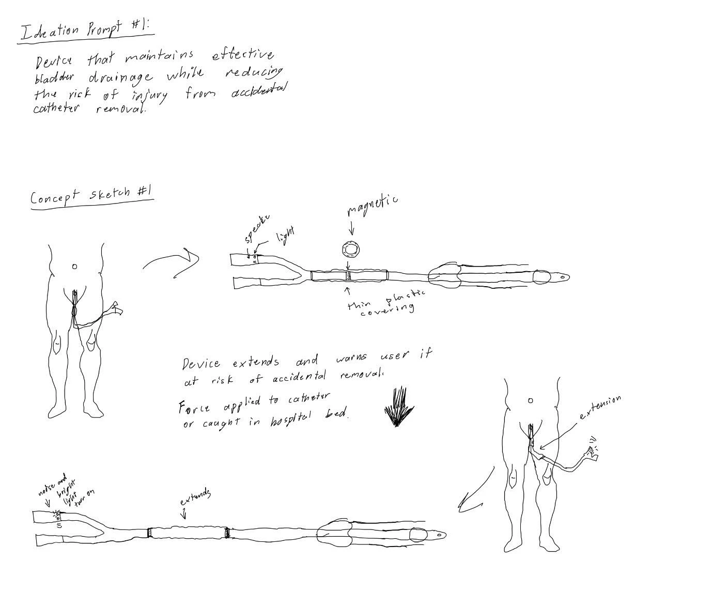
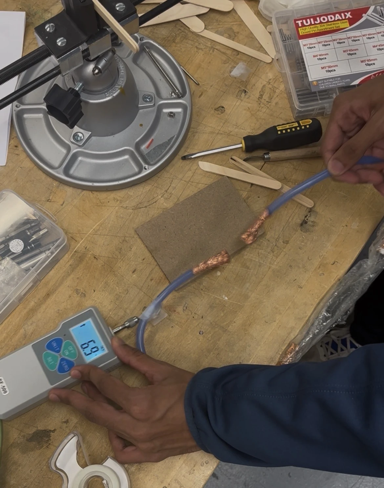
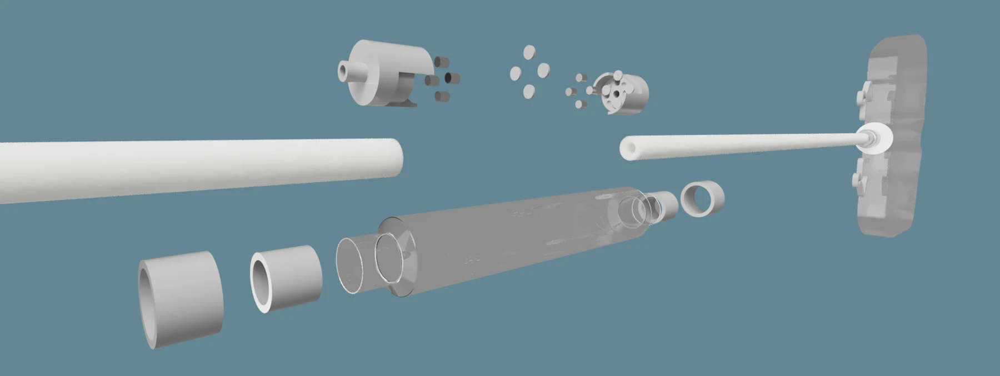
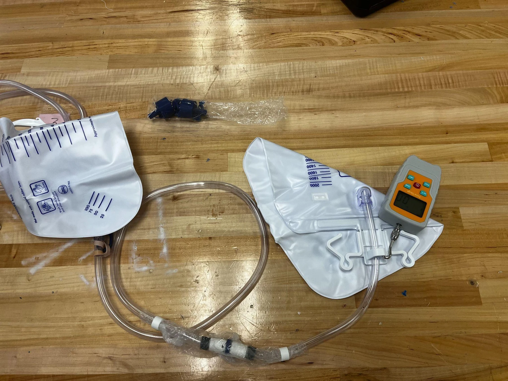

What happens when the drainage tube gets caught?
Our team worked on accidental pulling of a Foley catheter. We explored ways to let the external drainage system disconnect before a tug could pull on the catheter itself.
I contributed to ideation, CAD, fabrication, testing, calculations, documentation, and the presentation in a five-person team. The prototypes and test results on this page are shared team work.
Why we changed direction.
“In theory it worked perfectly (even with our calculations and analysis) but in practice it was impossible to improve using the tools that were available to us.”
My experience with the catheter tip concept
Our original direction was to modify the catheter tip to prevent lacerations. The calculations and analysis supported the idea, but we could not make it work in practice with the tools available. We pivoted to improving the drainage connection.
In verification testing, the protective sleeve could not be fully inserted into the model urethra. The additional diameter was a constraint the concept did not satisfy.
The final design kept the magnetic breakaway mechanism on the drainage tubing and omitted the tip sleeve.
Two places to intervene.
The design space included changes inside the body and changes to the external drainage line. That distinction affected what we could prototype and test with the tools available.
| Direction | Intended mechanism | Constraint revealed in the work |
|---|---|---|
| Catheter tip / protective sleeve | Reduce contact during insertion. | The sleeve could not be fully inserted into the model urethra; added diameter was a practical constraint. |
| Foldable retention cushion | Fold under a pull while retaining the catheter during normal use. | The early cushion came out at 8.3 N but was difficult to insert. Intermediate versions required too much force; a smaller, double-tapered version reached 12.3 N. |
| External magnetic connector | Interrupt the force path along the drainage tubing. | The connector needed to resist ordinary movement, detach under the project target, and accommodate containment and reconnection. |
The retention cushion ranked first in the early Pugh evaluation, but that ranking was a screening result. Prototyping exposed constraints the matrix alone could not resolve. The final design retained the external breakaway connection.


A connector that releases—without releasing too easily.
We started with 25 concepts and used Benefit–Effort and Pugh matrices to narrow the options. The magnetic breakaway concept moved into hands-on testing.
What changed between builds.
| Build | Observed result | What the next build addressed |
|---|---|---|
| Generation 0 | 3.2 N detachment. Light movement could separate the magnets; the bag jammed during reconnection. | Increase retention and change how fluid was contained. |
| Generation 1 | 6.9 N detachment, still below the project’s 13 N target. | Develop a more defined connector geometry and a workable containment arrangement. |
| Final build | Printed interlocking housings, neodymium magnets, containment bag, and retaining rings. | Verify detachment at several pull angles; keep the tip sleeve out of the final design. |
The early force values describe different prototype configurations. Final verification used a separate build and 24 trials.





Three jobs for the connector assembly.
Release
Magnets form a separable connection in the drainage line. Their retention must be enough for handling but low enough to meet the breakaway target.
Guide
The male–female housing geometry aligns the connector halves. The report describes an overhang intended to resist immediate separation during small changes in angle.
Contain
A polyethylene bag surrounds the junction. Rings hold and adjust the bag so it can accommodate separation and reconnection.
PLA was used for the printed prototype. It was not established as a production material for a clinical device.
Testing the pull from four directions.
The team tested the final connector at 0°, 30°, 60°, and 90°, with six trials per angle. All 24 measurements were below the project’s 13 N detachment target. The report records a minimum of 2.4 N at 0° and a maximum of 6.3 N at 90°.
These are classroom bench results from a model setup. The 13 N value is the project’s design criterion; the tests do not establish clinical safety or injury prevention.


What the bench experiment measured.
- Assemble the system. Connect the catheter, tubing, magnetic breakaway, containment bag, and collection bag. The team used a model urethra for the verification setup.
- Set the pull direction. Test 0°, 30°, 60°, and 90° using an angle measure.
- Pull to separation. Use the force gauge to record the force required to activate the breakaway.
- Repeat and compare. Complete six trials per angle and compare each result with the 13 N project criterion.
| Question | What the report supports | What remains to be established |
|---|---|---|
| Does it release below the project target? | All 24 recorded trials were below 13 N. | Repeatability beyond this sample and with more manufactured units. |
| Does pull direction matter? | Four directions were tested. Reported extremes were 2.4 N at 0° and 6.3 N at 90°. | Full per-angle distributions and uncertainty; the excerpt does not include the raw trial table. |
| Does it resist nuisance detachment? | Early prototypes exposed sensitivity to small movements. | A quantitative lower retention criterion and a representative movement protocol. |
| Is fluid contained after release? | Containment was incorporated into the prototype. | A quantified leak test, repeated reconnection testing, and durability testing. |
Reconnection and repeated use.
The report supports an initial proof of concept. Further work would need to establish repeatability over many disconnect–reconnect cycles, resistance to leaks, and how the connector behaves under everyday movement. Those questions would come before any clinical claim.
Source: BMED 2310 final design report and design history file, Spring 2026. Team project with Aidan Barton, Ian Lopes, Elizabeth Stinespring, and Mariana Vale.